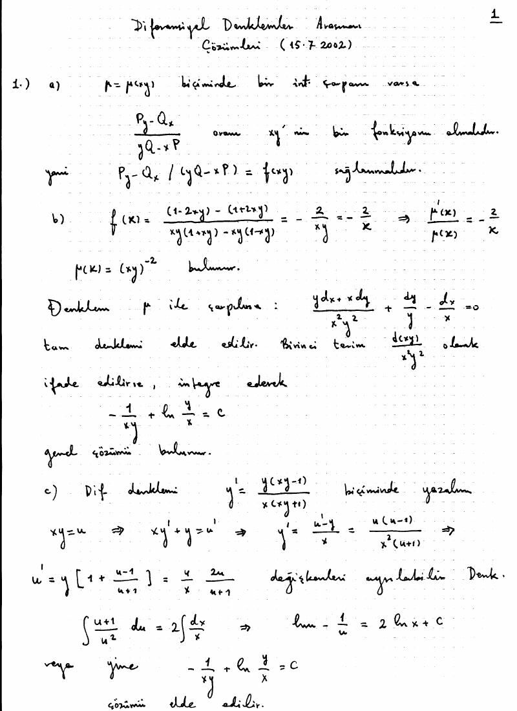
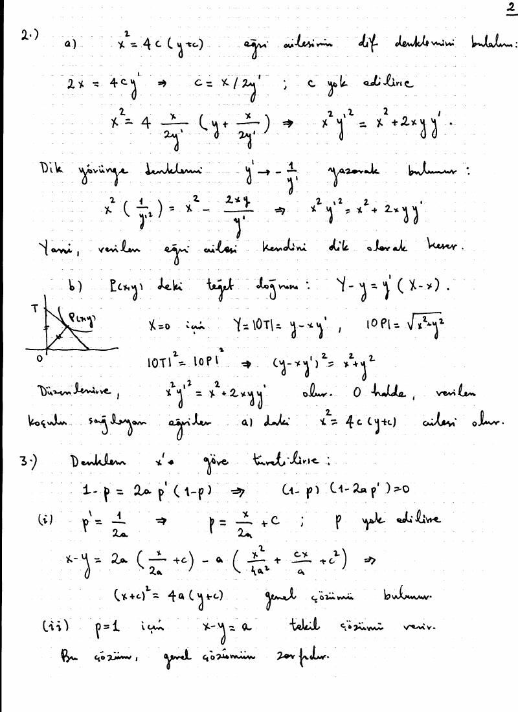
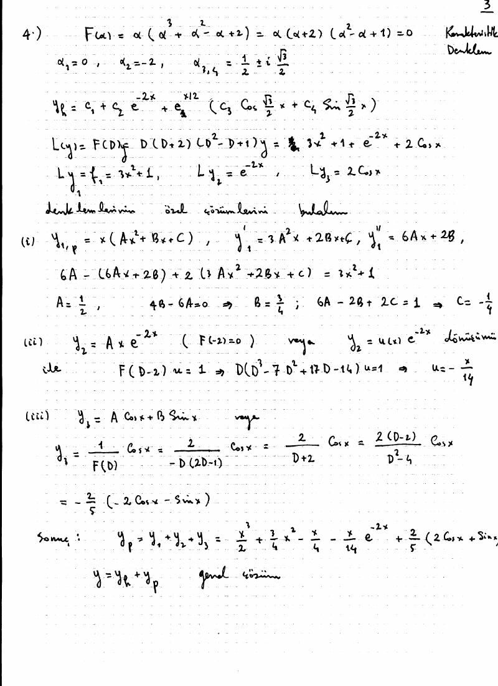
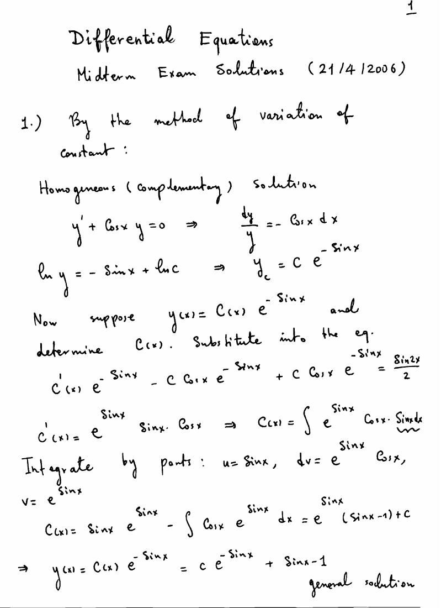
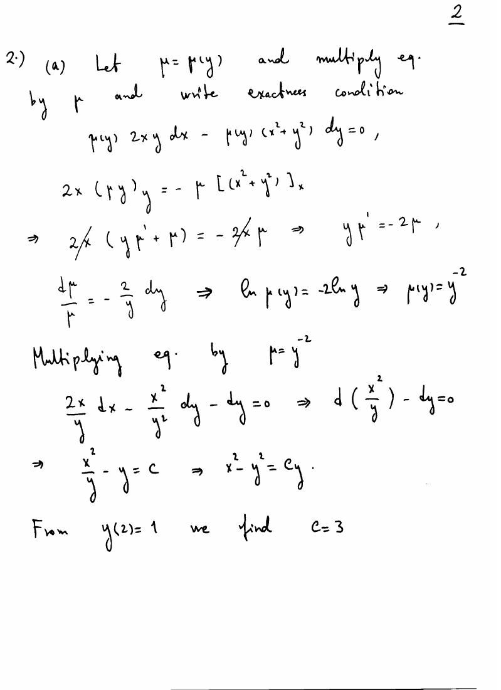
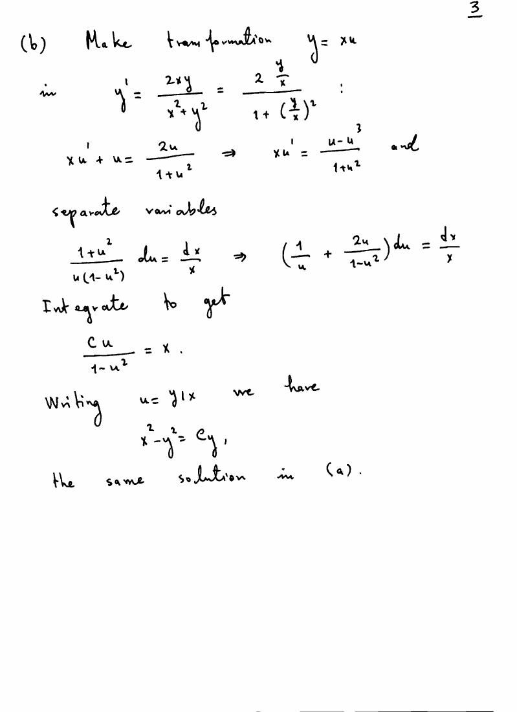
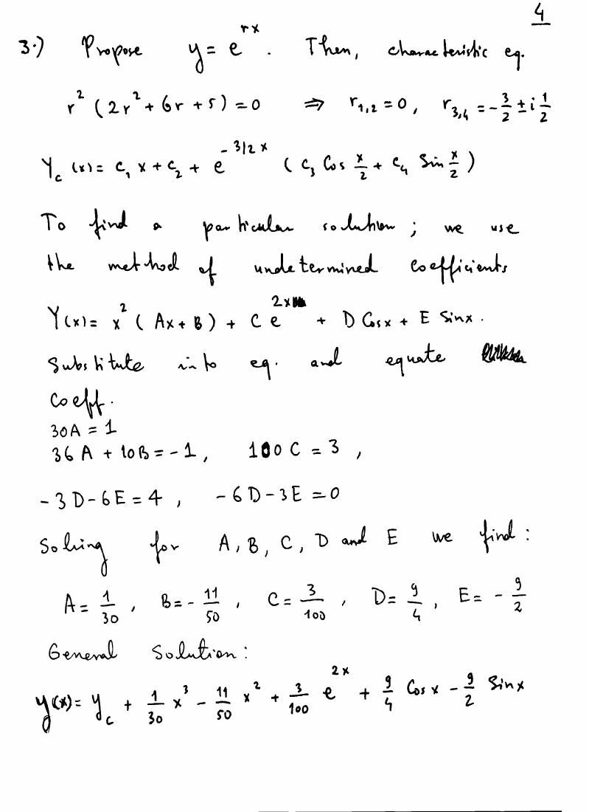
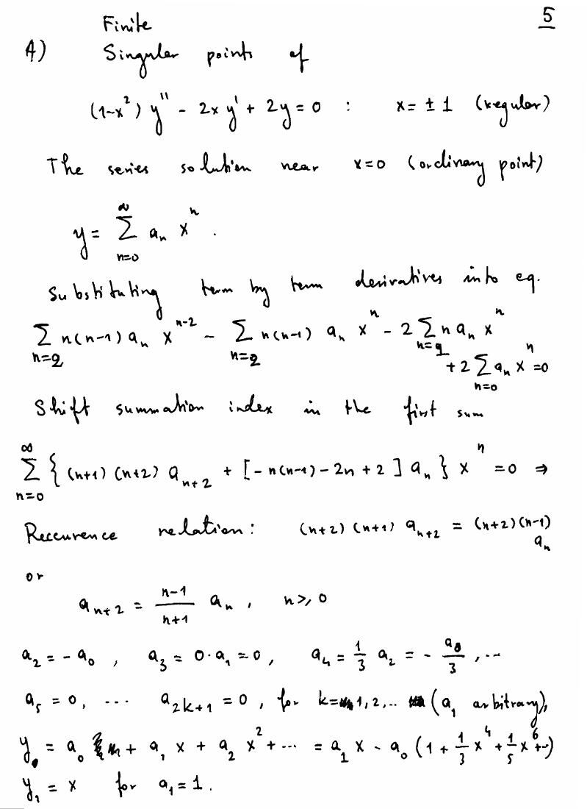
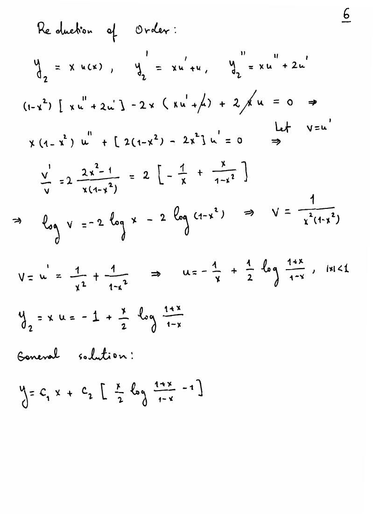

· MAT222
MAT222 Diferansiyel Denklemler: 1999–2006 Ara Sınavları ve Çözümleri (Kurum belirtilmemiş)
MAT222 – Diferansiyel Denklemler · 21.04.2006 · 17.10.2026
Bu yazı, MAT222 klasöründe saklanan 28 Nisan 1999, 17 Temmuz 2002, 17 Nisan 2003 ve 21 Nisan 2006 ara sınavlarını bir araya getiriyor. Belgelerde “Matematik Mühendisliği”, MAT201 ve MAT201E ibareleri var; üniversite ve hazırlayan adı açıkça yazmıyor. Ege Üniversitesi kaynaklığı doğrulanamadı. Sorular ve çözüm sonuçları metne aktarıldı; el yazısı çözüm sayfaları da eklendi. Dört orijinal PDF yazının sonunda ZIP olarak indirilebilir.
Bu içerik üçüncü taraf bir kaynağa aittir; arşiv ve nostalji amacıyla kaynak belirtilerek paylaşılmıştır. Hak sahibinin talebi hâlinde kaldırılır.
28 Nisan 1999: Matematik Mühendisliği
- (3y + 2xy⁴) dx + (x²y³ − x) dy = 0 denklemi için µ = xᵐyⁿ biçiminde ve sıfırıncı dereceden homojen integrasyon çarpanı bularak integre ediniz.
- yy″ + (y′)² + 2a²y² = 0 denklemini mertebe düşürerek, homojen denklem olarak ve u = y² dönüşümüyle lineerleştirerek çözünüz; sonuçları karşılaştırınız.
- xy″ + 2xy′ + (x + 1/(4x))y = 0 denkleminin y = xᵃe⁻ˣ biçiminde çözümü olması için a ne olmalıdır? Mertebe düşürme ve normal formla genel çözümü bulunuz.
- y‴ − 5y″ + 11y′ − 15y = eˣ(sin x + 2 cos 3x) denklemini çözünüz.
- x²y″ − (1 + 2x)xy′ + y = 0 denkleminin Frobenius çözümünü ve ikinci bağımsız çözümünü bulunuz; elemanter fonksiyonlarla ifade ediniz.
Bu bir sayfalık belgede çözüm anahtarı yoktur.
17 Temmuz 2002: MAT201
İntegrasyon çarpanı
P dx + Q dy = 0 denkleminin µ(xy) integrasyon çarpanına sahip olması için koşulu bulunuz. Ardından (y − xy²) dx + (x + x²y) dy = 0 denklemini hem integrasyon çarpanıyla hem u = xy dönüşümüyle çözünüz.
Çözümde z = xy için µ′/µ = (Pᵧ − Qₓ)/(yQ − xP) bağıntısı kullanılıyor. Sağ taraf yalnız z'ye bağlı olmalıdır. Verilen örnekte µ = (xy)⁻² ve sonuç:
−1/(xy) + ln|y/x| = C.
Dik yörüngeler ve tekil çözüm
- x² = 4c(y + c) ailesinin dik yörüngelerini belirleyiniz.
- Her noktasında teğetin y ekseninden ayırdığı parçanın uzunluğu o noktanın orijine uzaklığına eşit olan eğrileri bulunuz.
- p = y′ olmak üzere x − y = 2ap − ap² denklemini çözünüz; tekil çözümü geometrik olarak yorumlayınız.
Çözüm sayfalarında ilk iki problem için parabol aileleri elde ediliyor. Üçüncü soruda genel aile (x − C)² = 4a(y − C), tekil doğru y = x − a olarak yazılmış.
Sabit katsayılı denklem
Soru metni: y⁽⁴⁾ + y‴ − y″ + 2y′ = 3x² + 1 + e⁻²ˣ + 2 cos x.
Not: El yazısı çözüm, soldaki y″ teriminin katsayısını +1 alarak F(r) = r(r + 2)(r² − r + 1) kullanıyor. Bu, soru sayfasındaki −y″ ile aynı denklem değildir; çözüm anahtarı doğrudan sorunun cevabı olarak kullanılamaz.



17 Nisan 2003: MAT201
Öteleme ile homojenleştirme
(x + y + 3)²y′ = 2(y + 1)² denklemi için x = X − 2, y = Y − 1 ve Y = XU dönüşümleri uygulanıyor. Kaynakta sonuç:
ln(y + 1) + 2 arctan((y + 1)/(x + 2)) = C.
Mutlak değerle yazımı ln|y + 1| olur; bölme yapılan bölgeler ve ayrıca y = −1 çözümü dikkate alınmalıdır.
Bernoulli denklemi
x²y′ + xy + √y = 0 için u = √y seçilir. u′ + u/(2x) = −1/(2x²) ve kaynakta x > 0 bölgesinde:
y = (1 + C√x)²/x².
u = √y ≥ 0 koşulu korunmalıdır; ayrıca y = 0 çözümü vardır.
Dik yörüngeler
x²/c + y² = 1/(c − 1) ailesi için parametre yok edilince (y − xy′)(x + yy′) = y′ bulunur. y′ yerine −1/y′ konulduğunda aynı diferansiyel denklem elde edilir.
Başlangıç koşulu kontrolü
yy″ + (y′)² + 2y² = 0, y(0) = 1, y′(0) = 1/2.
Kaynak y² = A cos 2x + B sin 2x bulduktan sonra B = 2 ve y = √(cos 2x + 2 sin 2x) yazıyor.
Not: 2y(0)y′(0) = 2B eşitliği B = 1/2 verir. Başlangıç koşullarını sağlayan yerel çözüm y = √(cos 2x + (1/2)sin 2x)'tir. Kaynaktaki sonuç y′(0) = 2 verir. Önceki integral satırında da ln(y/C) = (1/2)cos(C₁ − 2x) yazılmış; sağda (1/2)ln|cos(C₁ − 2x)| bulunmalıdır.
Üçüncü mertebeden denklem
y‴ − 3y′ + 2y = e⁻²ˣ(x + sin x).
F(r) = (r − 1)²(r + 2). Kaynaktaki genel çözüm:
y = eˣ(C₁ + C₂x) + C₃e⁻²ˣ + e⁻²ˣ[x²/18 + 2x/27 + (−4 cos x + 3 sin x)/50].
Bu sonuç türevleriyle yerine koyularak kontrol edildi.
21 April 2006: MAT201E
The source is in English; the questions and solution results below retain that language.
- Find the general solution of 2y′ + 2(cos x)y = sin 2x. The solution sheet gives y = Ce^(−sin x) + sin x − 1.
- Solve 2xy − (x² + y²)y′ = 0 through (2,1), both by an integrating factor and as a homogeneous equation. The integrating factor is µ(y) = y⁻² and the result is x² − y² = 3y.
- Solve 2y⁽⁴⁾ + 6y‴ + 5y″ = x − 1 + 3e²ˣ + 4 cos x. The characteristic roots are 0 (double) and −3/2 ± i/2. The sheet gives y_h = C₁ + C₂x + e^(−3x/2)[C₃ cos(x/2) + C₄ sin(x/2)] and y_p = x³/30 − 11x²/50 + 3e²ˣ/100 + (9/4)cos x − (9/2)sin x.
- Classify the singular points of (1 − x²)y″ − 2xy′ + 2y = 0. Find a series solution at x = 0 and obtain another by reduction of order. The regular singular points are ±1; one solution is x and the other is (x/2)ln((1 + x)/(1 − x)) − 1 for |x| < 1.
Not: Üçüncü sorunun el yazısı özel çözümündeki katsayılar denklemi sağlamıyor. Yerine koyma kontrolüyle y_p = x³/30 − 11x²/50 + 3e²ˣ/100 − (4/15)cos x − (8/15)sin x bulunur. Homojen çözüm doğrudur.





